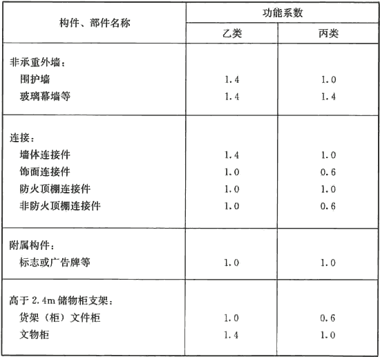
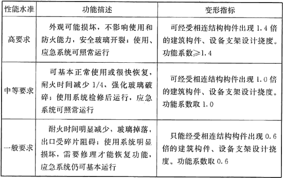

3．4 地震作用计算
3．4．1 建筑附属机电设备进行抗震验算时采用的功能系数可按表1和表2选用：
表1 建筑非结构构件的功能系数

表2 不同性能状况下建筑非结构构件功能系数选取建议

3．4．3 本条对于大于1．8kN的设备参照本规范第3．1．6条的规定执行。
3．4．4 计算建筑附属机电设备自振周期时，一般采用单质点模型凸对于支承条件复杂的机电设备，其计算模型应符合相关设备标准的要求。条文中建筑机电设备的重力大于所在楼层重力的10％时一般是指高位水箱、出屋面的大型塔架等。
3．4．5 位置系数：凡采用时程分析法补充计算的建筑，应按时程分析法计算结果调整顶点的取值(取顶部与底部地震绝对加速度反应的比值)。
对特别不规则的建筑、甲类建筑和表3所列高度范围的高层建筑，结构的抗震设计应采用时程分析法进行多遇地震下的补充计算。
表3 采用时程分析法的房屋高度范围
| 烈度、场地类别 | 房屋高度范围（m） |
| 8度Ⅰ类、Ⅱ类场地和7度 | ＞100 |
| 8度Ⅲ类、Ⅳ类场地 | ＞80 |
| 9度 | ＞60 |
3．4．7 楼面反应谱计算的基本方法是随机振动法和时程分析法，当非结构构件的材料与主体结构体系相同时，可直接利用一般的时程分析软件得到；当非结构构件的重力很大，或其材料阻尼特性与主体结构明显不同，或在不同楼层上有支点，需采用能考虑这些因素的技术软件进行计算。通常将建筑机电工程设施或构件简化为支承于结构的单质点体系，对支座间有相对位移的建筑机电工程设施或构件则采用多支点体系，按相应方法计算。
建筑机电工程设施或构件的楼面反应谱值，取决于设防烈度、场地条件、建筑机电工程设施或构件与结构体系之间的周期比、质量比和阻尼，以及建筑机电工程设施或构件在结构的支承位置、数量和连接性质。